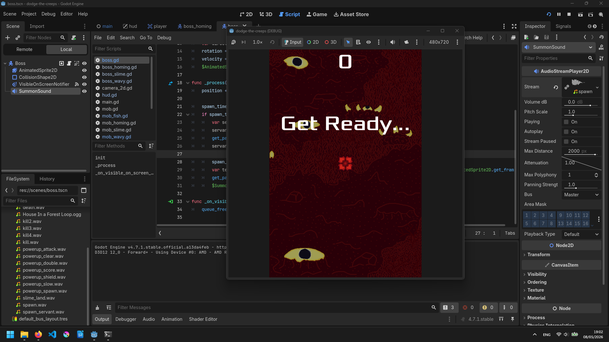
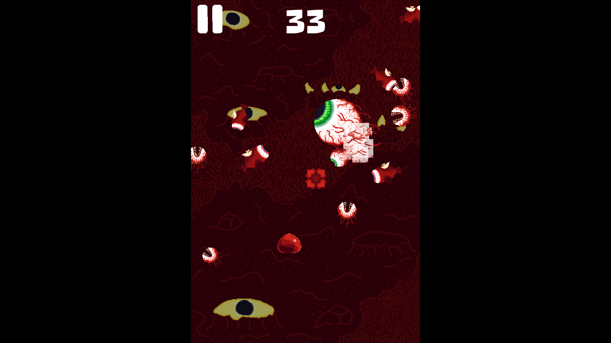
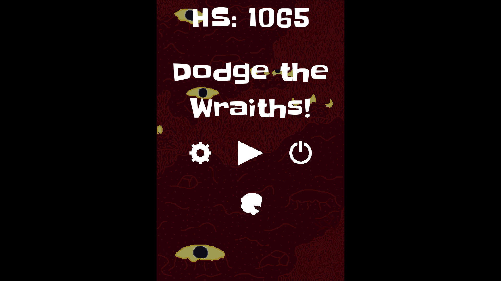
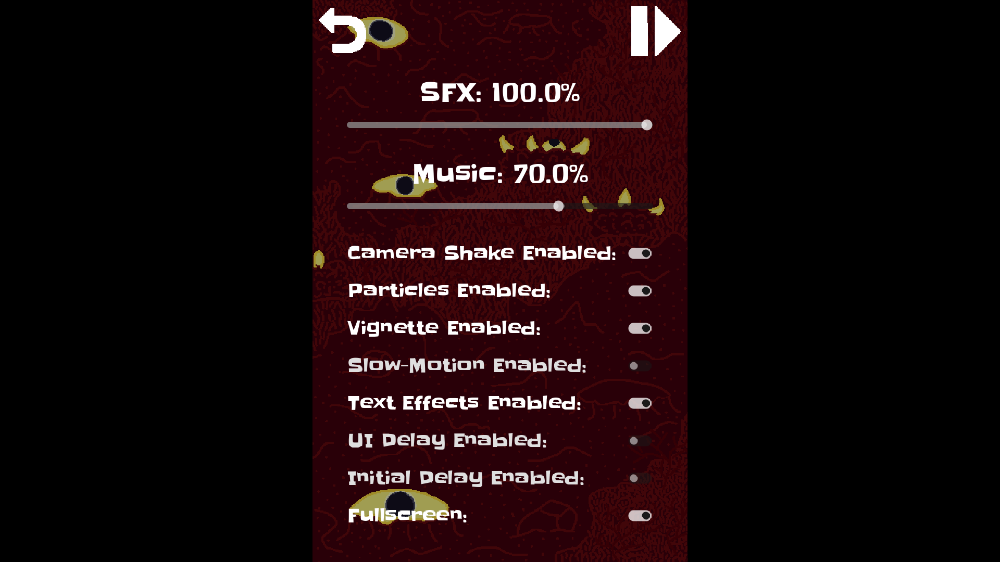
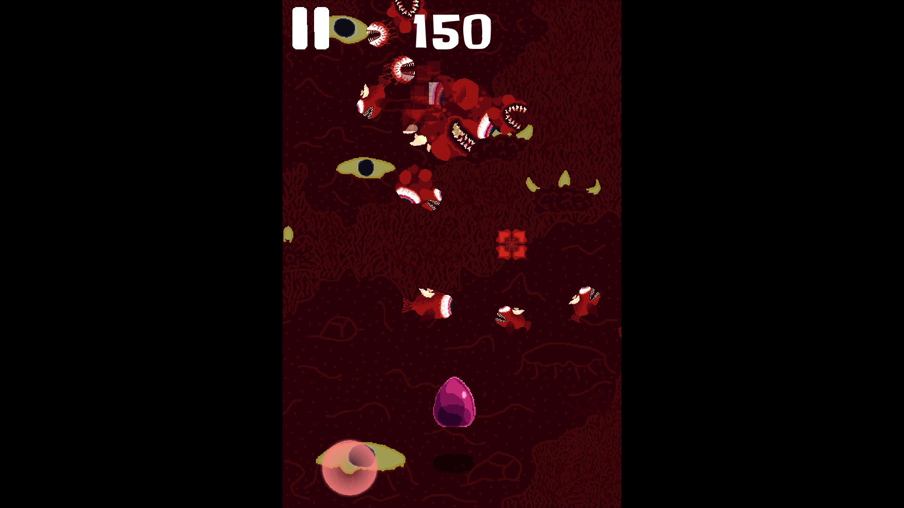
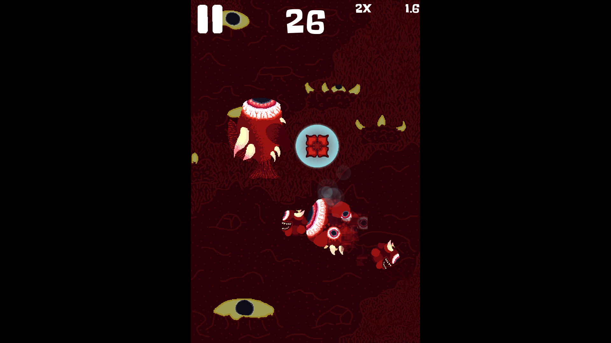
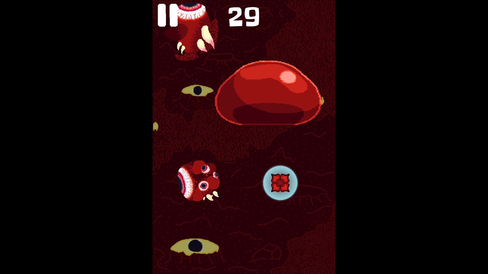
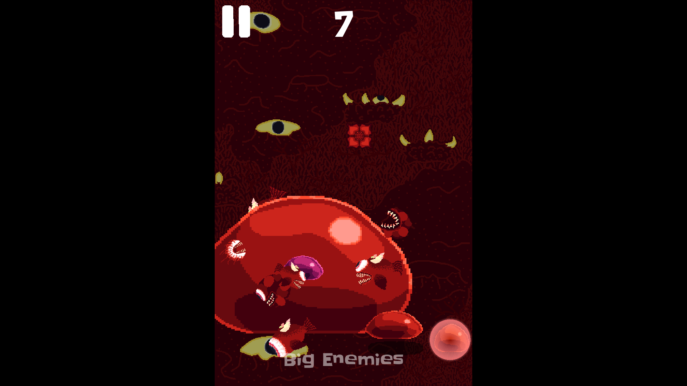

Dodge the Wraiths
Daniel Vishnevsky
About
Dodge the wraiths coming at you. Features 4 game modes. Made in Godot.
As the title says, you dodge the wraiths. Stupidly simple. Occasionally, different power-ups and bosses spawn. And there are 4 game modes - normal, bosses only, random modifiers and no power-ups.
There are 5 enemies, each having their boss counterpart, - eye, homing eye, demon, slime and demon fish. Everything is based on AA3 (might or might not still be a WIP, remind me to update this page!).
Development
Wanted to learn Godot and so I followed the introductory 2D game from Godot docs. I didn't want to be no normie so I added on top of it. Like a lot. In fact, you can compare the two (or go through it yourself here):
Play
The game is available for free on Windows and Linux. I hope you enjoy!
Gallery
I didn't take a lot of screenshots during development.







